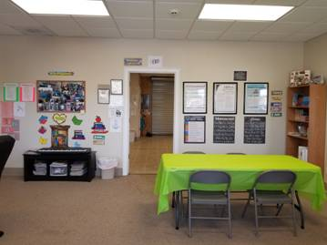
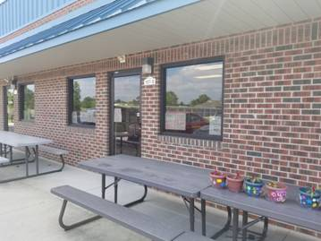
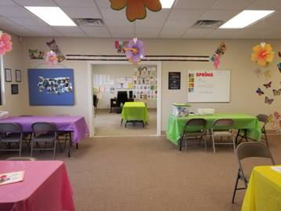

NC Innovations
(Formerly known as CAP I/DD)
Community Living and Support is an individualized service that enables the waiver beneficiary to live successfully in his/her own home, the home of his/her family or natural supports and be an active member of his/her community. A paraprofessional assists the person to learn new skills and/or supports the person in activities that are individualized and aligned with the person’s preferences. The intended outcome of the service is to increase or maintain the person’s life skills or provide the supervision needed to empower the person to live in the home of his/her family or natural supports, maximize his or her self-sufficiency, increase self- determination and enhance the person’s opportunity to have full membership in his/her community.
Community Living and Support enables the person to learn new skills, practice and/or improve existing skills. Areas of skill acquisition are: interpersonal, independent living, community living, self-care, and self-determination.
Community Living and Support provides supervision and assistance for the person to complete an activity to his/her level of independence. Areas of support consist of assistance in monitoring a health condition, nutrition or physical condition, incidental supervision, daily living skills, community participation, and interpersonal skills.
Community Living and Support provides technical assistance to unpaid supports who live in the home of the individual to assist the individual to maintain the skills they have learned. This assistance can be requested by the unpaid support or suggested by the Individual Support Planning team and must be a collaborative decision. The technical assistance is incidental to the provision of Community Living and Supports.
Exceptional Needs:
Community Living and Supports Exceptional Needs are used to meet exceptional, short term situations
that require services beyond 12 hours per day. The Individual Support Plan documents the exceptional supports needed based on the SIS® or other assessments that explain the nature of the issue and the expected intervention. A plan to transition the individual to sustainable supports is required. The plan may document the use of assistive technology or home modifications to reduce the amount of the support for behavioral and/or safety issues. Medical, behavioral, and support issues require documentation of when the situation is expected to resolve, evaluations/assessments needed to assist in resolving issues, and other service options explored. EPSDT and other appropriate State Plan services must always be utilized before waiver services are provided.
All Requests for Community Living and Supports require prior approval by the PIHP.
- a. Requests for up to 12 hours daily may be authorized for the entire plan year.
- b. Requests for up to 16 hours daily may be authorized for a six-month timeframe, within the plan year.
- c. Requests for more than 16 hours daily are authorized for up to a 90-day period within the plan year.
In situations requiring an authorization beyond the initial 90-day period, the PIHP shall approve
such authorization based on review of the transition plan that details the transition of the participant
from Community Living and Supports to other appropriate services.
The service may be provided in the home or community. The involvement of unpaid supports in the generalization of the service is an important aspect to ensure that achieved goals are practiced and maintained. Services may be allowed in the private home of the provider or staff of an Employer of Record at the discretion and agreement of the support team and when consistent with the ISP goals.
The purpose of Community Navigator Services is to promote self-determination, support the individual in making life choices, provide advocacy and identify opportunities to become a part of their community. Community Navigator provides support to individuals and planning teams in developing social networks and connections within local communities. Community Navigator Services also emphasizes, promotes and coordinates the use of generic resources to address the individual’s needs in addition to paid services. Community Navigator provides an annual informational session on Self-Determination and Self Direction. Individuals and legally responsible persons may choose to opt out of this requirement. These services also support individuals, representatives, and Managing Employers by providing assistance to those that direct their own waiver services.
Community Navigator is mandatory for all Employers of Record until competence in directing service is demonstrated. Community Navigator Services may be intermittent and fade as community connections develop and skills increase in individual direction. Community Navigators assist and support (rather than direct and manage) the individual throughout the service delivery process. Community Navigator Services are intended to enhance, not replace, existing natural and community resources. If the individual requires paid supports to participate or engage once connected with the activity, Community Networking is the appropriate service to utilize to refer and link the individual.
Community Networking services provide individualized day activities that support the waiver beneficiary’s definition of a meaningful day in an integrated community setting, with persons who are not disabled. If the beneficiary requires paid supports to participate / engage once connected with the activity, Community Networking can be used to refer and link the individual. This service is provided separate and apart from the beneficiary’s primary private residence, other residential living arrangement, and/or the home of a service provider. These services do not take place in licensed facilities and are intended to offer the beneficiary the opportunity to develop meaningful community relationships with non-disabled individuals. Services are designed to promote maximum participation in community life while developing natural supports within integrated settings. Community Networking services enable the beneficiary to increase or maintain their capacity for independence and develop social roles valued by non-disabled members of the community. As the beneficiary gain skills and increase community connections, service hours may fade.
Community Networking services consist of:
- a. Participation in adult education (College, Vocational Studies, and other educational opportunities);
- b. Development of community-based time management skills;
- c. Community-based classes for the development of hobbies or leisure/cultural interests;
- d. Volunteer work;
- e. Participation in formal/informal associations and/or community groups;
- f. Training and education in self-determination and self-advocacy;
- g. Using public transportation;
- h. Inclusion in a broad range of community settings that allow the beneficiary to make community connections;
- i. For children, staffing supports are covered to assist children to participate in day care/after school
summer programs that serve typically developing children and are not funded by Day Supports;
- j. Payment for attendance at classes and conferences is also included.
- k. Payment for memberships can be covered when the beneficiary participates in an integrated class; and
- l. Transportation, when the activity does not include staffing support and the destination of the
transportation is an integrated community setting or a self-advocacy activity. Payments for
transportation are an established per trip charge or mileage.
This service includes a combination of training, personal assistance and supports as needed by the beneficiary during activities. Transportation to/from the beneficiary’s residence and the training site(s) is covered.
Day Supports is a group, facility-based service that provides assistance to the individual with acquisition, retention, or improvement in socialization and daily living skills and is one option for a meaningful day.
“Facility-Based” means that individuals who receive this service are often in a licensed Day Supports provider facility that serves individuals with Intellectual and Developmental Disabilities. Individuals who receive Day Supports only have to attend the Day Supports Facility once per week and therefore are often in the community with individuals without intellectual and developmental disabilities. Developmental Day is provided in day care settings with children who do not function with an intellectual or developmental disability.
For individuals who are aging, Day Supports can provide a structured day program of service and support with nursing supervision in an Adult Day Care Program. Additionally, Adult Day Health services similar to adult day care programs in that they provide an organized program of services during the day in a community group setting to support the personal independence of older adults and promote their social, physical, and emotional well-being.
Day Supports emphasizes inclusion and independence with a focus on enabling the individual to attain or maintain his/her maximum self-sufficiency, increase self-determination and enhance the person’s opportunity to have a meaningful day. To ensure informed choice among a variety of options for a meaningful day, individuals new to the service and 16 years of age and older, will receive education on available options during the planning meeting. Education must include exposure to the same day activities as others in the community and the structure of Day Supports must provide the opportunity to discover his or her skills, interests, and talents in his or her community. Grouping of individuals must be appropriate to the age and preferences of the person



Respite services provide periodic or scheduled support and relief to the primary caregiver(s) from the responsibility and stress of caring for the individual. NC Innovations respite may also be used to provide temporary relief to individuals who reside in Licensed and Unlicensed AFLs, but it may not be billed on the same day as Residential Supports. This service enables the primary caregiver to meet or participate in planned or emergency events, and to have planned time for him/her and/or family members. This service also enables the individual to receive periodic support and relief from the primary caregiver(s) at his/her choice. Respite may be utilized during school hours for sickness or injury. Respite may include in and out-of-home services, inclusive of overnight, weekend care, or emergency care (family emergency based, not to include out of home crisis). The primary caregiver(s) is the person principally responsible for the care and supervision of the beneficiary and must maintain his/her primary residence at the same address as the beneficiary.
Supported Employment Services provide assistance with choosing, acquiring, and maintaining a job for beneficiaries ages 16 and older for whom competitive employment has not been achieved and /or has been interrupted or intermittent.
The intent of Initial Supported Employment is to assist individuals with developing skills to seek, obtain and maintain competitive employment or develop and operating a micro-enterprise. The employment positions are found based on individual preferences, strengths, and experiences. Job finding is not based on a pool of jobs that are available or set aside specifically for individuals with disabilities.
The transition to long-term supported employment should occur within one year of successful competitive employment, at this time it is expected that staff time will reduce as the individual becomes more independent in her/his job duties. Supported Employment may be needed if the individual’s job duties change or if a new job is acquired. Feedback regarding the success and integration of the individual into their position should be obtained from the employer, through employee evaluations that provide information on the level of supervision and oversight that the individual requires on a daily basis. Part of the responsibility of the employment specialist is providing education to the employer regarding ADA accommodations, in an effort to ensure the transition from ongoing Supported Employment to Long-term follow-up is successful and the individual’s needs are met. Long-term follow-up may be used on a regular basis to meet specific and well documented needs. Long-Term follow-up related to medical / behavioral / physical support needs shall require medical behavioral records and accompanying documentation in the ISP supporting the need for individual services as the most appropriate and viable option.
Initial Supported Employment services include:
- a. Pre-job training/education and development activities to prepare a person to engage in meaningful
work-related activities which may include career/educational counseling, active job searching, job
shadowing, assistance in the use of educational resources, training in resume preparation, job
interview skills, study skills, assistance in learning skills necessary for job retention.
- b. Assisting an individual to develop and operate a micro-enterprise. This assistance consists of:
- 1. Aiding the individual to identify potential business opportunities;
- 2. Assistance in the development of a business plan, including potential sources of business financing and other assistance; and
- 3. Identification of the supports that are necessary in order for the individual to operate the business.
- c. Coaching and employment support activities that enable an individual to complete initial job training
or develop skills necessary to maintain employment is completed through activities such as:
assistance in job tasks, work adjustment training and counseling.
- d. Providing technical support to potential employers regarding Federal ADA accommodations and requirements.
The service includes transportation from the individual’s residence and to and from the job site. The provider agency’s payment for transportation from the individual’s residence and the individual’s job site is authorized service time.
Supported Living provides a flexible partnership that enables a person/s to live in their own home with support from an agency that provides individualized assistance in a home that is under the control and responsibility of the person/s. The service includes direct assistance as needed with activities of daily living, household chores essential to the health and safety of the individual/s, budget management, attending appointments, and interpersonal and social skills building to enable the individual to live in a home in the community. Training activities, supervision, and assistance may be provided to allow the person to participate in home life or community activities. Other activities include assistance with monitoring health status and physical condition, and assistance with transferring, ambulation and use of special mobility devices. Transportation is an inclusive component of Supported Living to achieve goals and objectives related to these activities with the exception of transportation to and from medical services covered through the Medicaid State Plan.
This service is distinct from Residential Supports in that it provides for a variety of living arrangements for individuals who choose to live in their own home versus the home of a provider. A person’s own home is defined as the place the person lives and in which the person has all of the ownership or tenancy rights afforded under the law. This home must have a separate address from any other residence located on the same property. Persons living in a Supported Living arrangement shall choose who lives with him/her, are involved in the selection of direct care staff, and participate in the development of roles and responsibilities of staff. Persons receiving Supported Living have the right to manage personal funds as specified in the Individual Support Plan. A formal roommate agreement, separate from the landlord lease agreement, is established and signed by individuals whose name is on the lease.
The provider of Supported Living services shall not:
- a. Own the person/s’ home or have any authority to require the person/s to move if the person/s changes service providers.
- b. Own, be owned by, or be affiliated with any entity that leases or rents a place of residence to a
person if such entity requires, as a condition of renting or leasing, the person to move if the
Supported Living provider changes.
The Supported Living provider shall be responsible for providing an individualized level of supports determined during the assessment process, including risk assessment, and identified and approved in the Individual Support Plan (ISP) and have 24 hour per day availability, including back-up and relief staff and in the case of emergency or crisis. Some persons receiving Supported Living services may be able to have unsupervised periods of time based on the assessment process. In these situations a specific plan for addressing health and safety needs must be included in the ISP and the Supported Living provider must have staffing available in the case of emergency or crisis. Requirements for the person/s safety in the absence of a staff person shall be addressed and may include use of tele care options. When assessed to be appropriate Assistive Technology elements may be utilized in lieu of direct care staff.
To ensure the intent of the definition to support persons to live in a home of their own and achieve independence, Supported Living shall not be provided in a home where a person lives with family members unless such family members are a person receiving Supported Living, a spouse, or a minor child. Family member is defined as a parent, grandparents, siblings, grandchildren, and other extended family members. In addition, it also includes step-parents, non-minor step-children and step-siblings and non-minor adoptive relationships. All persons receiving Supported Living services who live in the same household must be on the lease unless the person is a live-in caregiver.
Crisis Supports provide intervention and stabilization for individuals experiencing a crisis. Crisis Supports are for individuals who experience acute crises and who present a threat to the person’s health and safety or the health and safety of others. These behaviors may result in the person losing his or her home, job, or access to activities and community involvement. Crisis Supports promote prevention of crises as well as assistance in stabilizing the individual when a behavioral crisis occurs. Crisis Supports are an immediate intervention available 24 hours per day, 7 days per week, to support the individual. Service authorization can be granted verbally or planned through the ISP to meet the needs of the individual. Following service authorization, any needed modifications to the ISP and individual budget will occur within five (5) working days of the date of verbal service authorization.
The Comprehensive Crisis Plan must be updated as warranted in collaboration with the team within 14 days of a crisis, in an effort to ensure it meets the individual’s needs and is reflective of anything learned from the crisis.
Crisis Intervention & Stabilization Supports
Staff trained in Crisis Services Competencies is available to provide “first response” crisis services to individuals they support, in the event of a crisis. These activities are :
- a. Assess the nature of the crisis to determine whether the situation can be stabilized in the current
location or if a higher-level intervention is needed
- b. Determine and contact agencies needed to secure higher level intervention or out-of-home services
- c. Provide direction to staff present at the crisis or provide direct intervention to de-escalate behavior or
protect others living with the individual during behavioral or medical episodes.
- d. Contact the care coordinator within 48 hours following the intervention to arrange for a treatment
team meeting for the individual and/or provide direction to service providers who may be supporting
the individual in day programming and community settings, such as direct intervention to de-escalate
behavior or protect others during behavioral episodes. This may consist of enhanced staffing provided
by a QP to provide one additional staff person in settings where the participant may be receiving
other services.